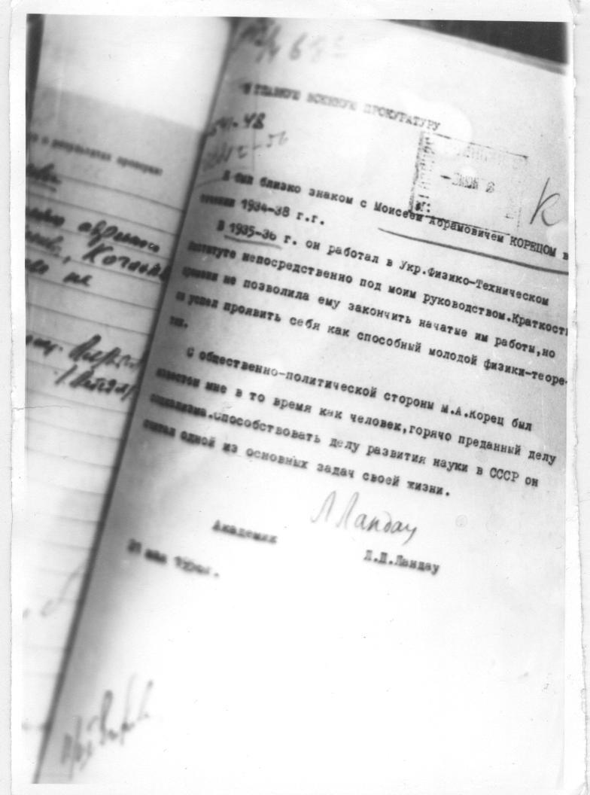

Письмо в Главную военную прокуратуру

Чтение снимка, местами неуверенное. Сверьте со снимком.
[на полях] [нрзб]
[на полях] 54.48
[на полях] [нрзб]
[печать] [нрзб]
[на полях] К
В ГЛАВНУЮ ВОЕННУЮ ПРОКУРАТУРУ
Я был близко знаком с Моисеем Абрамовичем КОРЕЦОМ в
течение 1934-38 г.г.
В 1935-36 г. он работал в Укр. Физико-Техническом
институте непосредственно под моим руководством. Краткость
[нрзб] не позволила ему закончить начатые им работы, но
он успел проявить себя как способный молодой физик-теоре-
тик.
С общественно-политической стороны М.А. Корец был
известен мне в то время как человек, горячо преданный делу
[нрзб] способствовать делу развития науки в СССР он
считал одной из основных задач своей жизни.
Л. Ландау
Академик
Л.Д. Ландау
21 мая 1956 г.
[на полях] [нрзб]
[на полях] Корец
[на полях] [нрзб]